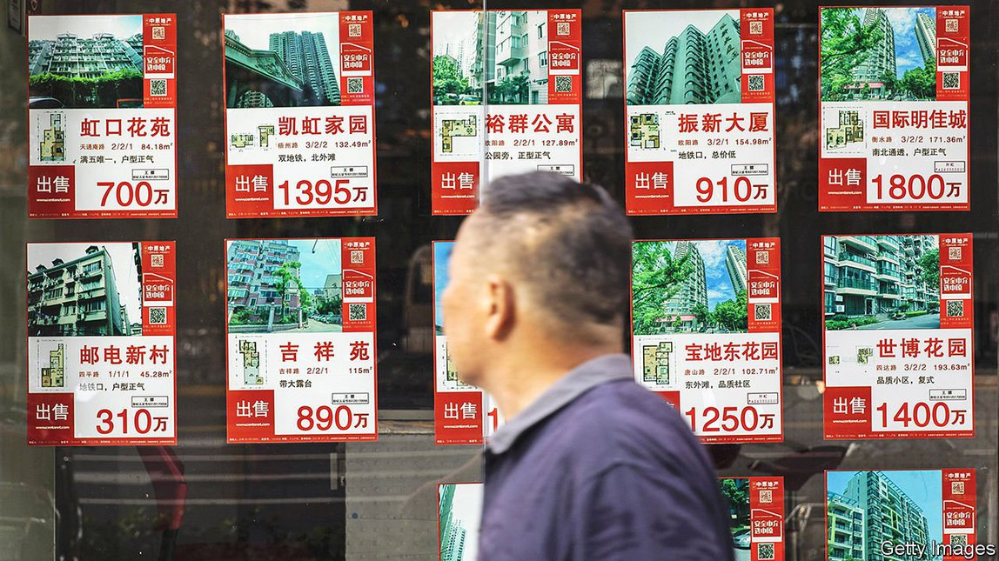
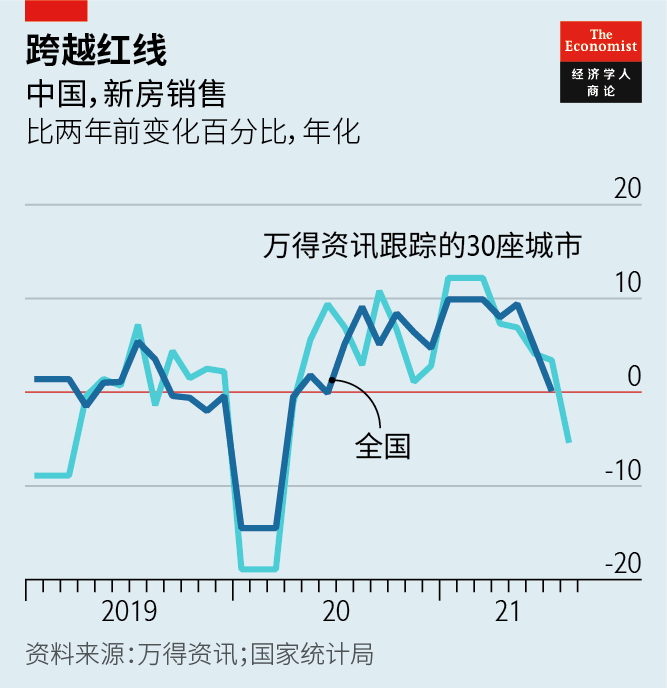
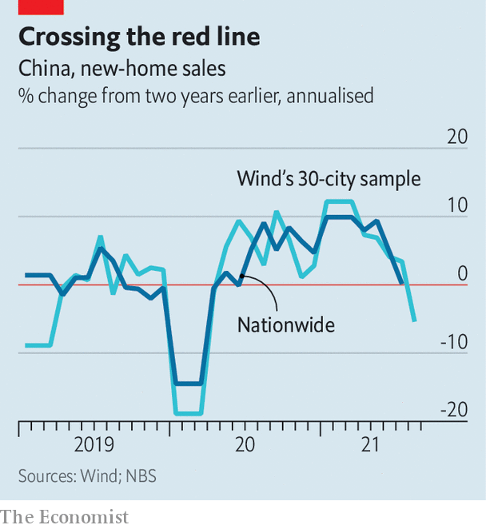

2021-09-13T09:54:46+00:00
红线、灰犀牛和大山
中国稳定房地产市场的举措引发不安
能稳定房市而又不伤及整体经济吗？
一九七九年十月六日是华盛顿一个美好的星期六。一点也看不出这天会是经济政策发生巨变的日子。但就在这一天，时任美联储主席的保罗·沃尔克（Paul Volcker）宣布了一项遏制持续通胀的激进计划。在这场战役取得成功之前，美国的利率一度飙升至20%，失业率突破10%。汽车经销商把滞销汽车的钥匙装在棺材里送给他。
投资银行野村证券的陆挺认为，中国现在也面临着自己的“沃尔克时刻”。中国政府的目的不是要抑制恶性通胀（中国的物价只在温和上涨），而是要打破房地产投机和信贷扩张的恶性循环。监管机构正在对开发商融资和家庭购房加以限制。新出台的法规已将包括中国最大的住宅开发商恒大集团在内的几家房地产公司推至破产边缘，并导致房屋销量减少。但是，中国领导人是否愿意为了实现目标而忍受像沃尔克造成的那种经济困境？可能很快就会见分晓了。
英国的老话说，英国人的家就是他的城堡。而对中国人来说，家的含义要丰富得多。除了是安身立命之所，住房常常也是抵押品、储蓄、投机性投资、彩礼和进入好学校的门票。中国学者编制的数据集《中国家庭金融调查》显示，住房已占家庭财富的四分之三。住房也是家庭债务的最大组成部分，据一项估计，住房债务在去年年底已经超过GDP的70%。地方政府收入的30%来自向开发商卖地。在经济低迷时期，政策制定者往往依赖房地产建设来提振经济。
房地产还有其他形象。高房价常常被比作一座“大山”（另外两座是昂贵的医疗和教育）和“灰犀牛”（显而易见但被忽视的风险）。今年3月，中国银保监会主席郭树清警告称，如果房价下跌，持有多套房产的人不仅会蒙受“很大的损失”，还可能拖欠房贷，危及银行，那么“经济生活就发生很大的混乱”。
政府希望房地产扮演更加适度的角色。2016年12月，国家主席习近平说，房子是“用来住的，不是用来炒的”，这句话现在成了官员们的口头禅。2019年，中国共产党宣称房地产不是短期经济刺激的工具，今年7月的政治局会议也重申了这一承诺。
政府现在试图从房地产行业的金融脆弱性着手，直面这头灰犀牛。去年，监管机构对银行的个人住房贷款和房地产贷款占比设置上限。它们还对知名房地产开发商实施“三条红线”，根据其资产、股东权益和现金来限制其债务规模。现在，当高端开发商碧桂园的总裁谈到“转绿”的目标时，他指的不是环境，而是要避开那三条红线。
限制措施对房地产市场的影响日益凸显。金融数据公司万得资讯跟踪了30个城市的新房销售情况，显示8月同比骤降23%，高于7月和6月跌幅。销量也低于2019年同期疫情爆发前的水平（见图表）。野村证券的陆挺表示，投资者应该为“远差于预期的增长放缓、更多的贷款和债券违约，以及可能的股市动荡”做好准备。
监管机构会手软吗？过去，政策制定者在经济低迷期会迅速放松对房地产的限制。咨询公司龙洲经讯（Gavekal Dragonomics）的咬丽蔷认为，房屋销量或房价大幅下跌数月可能会“促使政府立场软化”。但陆挺认为，要领导层转向会很难。他们已经公开承诺收紧政策，并且在官场中形成压力。今年早些时候，深圳的一批官员因未能遏制高房价被中央免去了职务。
可以认为，这些限制措施是政府实现“共同富裕”的新工作重点的一部分。高昂的房价与该目标格格不入。万广华、汪晨、吴雨三位中国学者的研究发现，住房成本造成了中国约75%的财富不平等。这可能也是中国家庭少子化趋势的原因之一，政府对这一趋势日益担忧。
为了支撑经济增长，中国可能会尝试建造更多的保障性住房。政府已下令40个城市在今年建造近100万套廉租房。但是这项工作要扩大到足够规模还需时日。与此同时，中国的增长将面临其他威胁。服务业可能因疫情相关封锁受到打击。随着国外制造业复苏，中国的出口增速可能放缓。而如果地方政府不能再向开发商大量卖地，基础设施的支出就会减少。
很难想象中国会把事情推到像沃尔克当时那种境地。但是，沃尔克本人也并没有预见到在那个美好星期六之后出现的全面经济阵痛。在未来几个月里，处境艰难的中国开发商可能会持有大量卖不掉的房子。他们会把钥匙送去哪里呢？
2021-09-13T09:54:46+00:00
Red lines, grey rhinos and big mountains
China’s bid to stabilise its property market is causing jitters
Can it be done without harming the wider economy?
OCTOBER 6TH 1979 was a beautiful Saturday in Washington. It was not the kind of day that augured wrenching change in economic policy. But on that date Paul Volcker, then chairman of America’s central bank, announced a radical plan to quash persistent inflation. Before the battle was won, America’s interest rates reached 20% and unemployment surpassed 10%. Car dealers sent him the keys to vehicles they could not sell, in coffins.
China is now facing its own “Volcker moment”, according to Ting Lu of Nomura, a bank. The government’s aim is not to curb an inflationary spiral (China’s consumer prices are rising only modestly) but to break a vicious circle of property speculation and credit expansion. Regulators are making it harder for developers to raise money and for households to buy homes. The new rules have already pushed several property firms, including the country’s biggest homebuilder, Evergrande, to the brink and contributed to a decline in home sales. But are China’s rulers willing to endure anything like the economic discomfort that Volcker inflicted to achieve their goals? The world may be about to find out.
An Englishman’s home is his castle. In China, a home is much more besides. As well as providing shelter and security, housing often serves as collateral, nest-egg, speculative investment, bride-price and ticket to a good school. Housing makes up three-quarters of household wealth, according to the China Household Financial Survey, a data set compiled by academics in China. It accounts for the biggest chunk of household debt, which by one estimate exceeded 70% of GDP at the end of last year. Local governments raise 30% of their revenue by selling land to developers. And policymakers often rely on homebuilding to revive the economy in downturns.
Property dons other guises, too. The high price of housing is often likened to a “big mountain” (alongside costly health care and education) and a “grey rhino” (an obvious but neglected risk). In March Guo Shuqing, the head of China’s banking and insurance regulator, warned that if house prices were to drop, people holding multiple properties would not only suffer “huge losses”, they might also fall delinquent on their mortgages, endangering the banks and leading to “economic chaos”.
The government wants property to play a more modest role. In December 2016 President Xi Jinping said homes were for “living in, not for speculating”, a phrase that officials now often repeat. In 2019 the Communist Party declared that property was not a tool for short-term economic stimulus, a commitment reiterated at a meeting of the ruling Politburo in July.
The authorities are facing the grey rhino more squarely by trying to tackle the industry’s financial fragilities. Last year regulators capped the share of mortgages and property-related loans that banks may hold. They also imposed “three red lines” on prominent property developers, limiting the size of their debts relative to their assets, equity and cash. Now when the president of Country Garden, a high-end developer, talks of his aim to “turn green” he is not referring to the environment, but to keeping clear of those lines.
The impact of the curbs on the property market is becoming more stark. Sales of new homes in 30 cities tracked by Wind, a financial-data firm, fell by 23% in August compared with a year earlier, having fallen less sharply in July and June. Sales were also lower than in the same period of 2019, before the pandemic (see chart). Nomura’s Mr Lu says investors should prepare for a “much worse-than-expected growth slowdown, more loan and bond defaults, and potential stockmarket turmoil.”
Will the regulators blink? In the past, policymakers have been quick to ease property curbs in downturns. A big drop in house sales or prices over several months would probably “jolt the government into a more dovish stance”, argues Rosealea Yao of Gavekal Dragonomics, a consultancy. But Mr Lu believes it will be hard for leaders to reverse course. They have publicly committed themselves to a tighter policy and created bureaucratic momentum behind it. Earlier this year the central government sacked officials in the southern city of Shenzhen for failing to tame prices.
The curbs can be seen as part of the government’s new preoccupation with creating “common prosperity”. Unaffordable housing conflicts with this aim. Research by three Chinese academics—Guanghua Wan, Chen Wang and Yu Wu—has found that the cost of housing causes about 75% of China’s wealth inequality. It may also be one reason why China’s families now have so few children, a trend that increasingly worries the government.
To shore up growth, China may try building more subsidised homes. It has ordered 40 cities to construct almost 1m low-rent housing units this year. But it will take time to ramp up such work on a sufficient scale. Meanwhile, China’s growth will face other threats. Service industries may suffer from pandemic-related lockdowns. Exports may grow more slowly as manufacturing recovers abroad. And infrastructure spending will weaken if local governments cannot sell as much land to developers.
It is hard to imagine China pushing things nearly as far as Volcker did. But then Volcker himself did not foresee the full economic pain that would follow that beautiful Saturday. China’s hard-pressed developers may find themselves with many unsold properties in the months ahead. Where will they send the keys? ■
2021-09-13T09:54:46+00:00
紅線、灰犀牛和大山
中國穩定房地產市場的舉措引發不安
能穩定房市而又不傷及整體經濟嗎？
一九七九年十月六日是華盛頓一個美好的星期六。一點也看不出這天會是經濟政策發生巨變的日子。但就在這一天，時任美聯儲主席的保羅·沃爾克（Paul Volcker）宣布了一項遏制持續通脹的激進計劃。在這場戰役取得成功之前，美國的利率一度飆升至20%，失業率突破10%。汽車經銷商把滯銷汽車的鑰匙裝在棺材裡送給他。
投資銀行野村證券的陸挺認為，中國現在也面臨著自己的“沃爾克時刻”。中國政府的目的不是要抑制惡性通脹（中國的物價只在溫和上漲），而是要打破房地產投機和信貸擴張的惡性循環。監管機構正在對開發商融資和家庭購房加以限制。新出台的法規已將包括中國最大的住宅開發商恆大集團在內的幾家房地產公司推至破產邊緣，並導致房屋銷量減少。但是，中國領導人是否願意為了實現目標而忍受像沃爾克造成的那種經濟困境？可能很快就會見分曉了。
英國的老話說，英國人的家就是他的城堡。而對中國人來說，家的含義要豐富得多。除了是安身立命之所，住房常常也是抵押品、儲蓄、投機性投資、彩禮和進入好學校的門票。中國學者編製的數據集《中國家庭金融調查》顯示，住房已佔家庭財富的四分之三。住房也是家庭債務的最大組成部分，據一項估計，住房債務在去年年底已經超過GDP的70%。地方政府收入的30%來自向開發商賣地。在經濟低迷時期，政策制定者往往依賴房地產建設來提振經濟。
房地產還有其他形象。高房價常常被比作一座“大山”（另外兩座是昂貴的醫療和教育）和“灰犀牛”（顯而易見但被忽視的風險）。今年3月，中國銀保監會主席郭樹清警告稱，如果房價下跌，持有多套房產的人不僅會蒙受“很大的損失”，還可能拖欠房貸，危及銀行，那麼“經濟生活就發生很大的混亂”。
政府希望房地產扮演更加適度的角色。2016年12月，國家主席習近平說，房子是“用來住的，不是用來炒的”，這句話現在成了官員們的口頭禪。2019年，中國共產黨宣稱房地產不是短期經濟刺激的工具，今年7月的政治局會議也重申了這一承諾。
政府現在試圖從房地產行業的金融脆弱性着手，直面這頭灰犀牛。去年，監管機構對銀行的個人住房貸款和房地產貸款佔比設置上限。它們還對知名房地產開發商實施“三條紅線”，根據其資產、股東權益和現金來限制其債務規模。現在，當高端開發商碧桂園的總裁談到“轉綠”的目標時，他指的不是環境，而是要避開那三條紅線。
限制措施對房地產市場的影響日益凸顯。金融數據公司萬得資訊跟蹤了30個城市的新房銷售情況，顯示8月同比驟降23%，高於7月和6月跌幅。銷量也低於2019年同期疫情爆發前的水平（見圖表）。野村證券的陸挺表示，投資者應該為“遠差於預期的增長放緩、更多的貸款和債券違約，以及可能的股市動蕩”做好準備。
監管機構會手軟嗎？過去，政策制定者在經濟低迷期會迅速放鬆對房地產的限制。諮詢公司龍洲經訊（Gavekal Dragonomics）的咬麗薔認為，房屋銷量或房價大幅下跌數月可能會“促使政府立場軟化”。但陸挺認為，要領導層轉向會很難。他們已經公開承諾收緊政策，並且在官場中形成壓力。今年早些時候，深圳的一批官員因未能遏制高房價被中央免去了職務。
可以認為，這些限制措施是政府實現“共同富裕”的新工作重點的一部分。高昂的房價與該目標格格不入。萬廣華、汪晨、吳雨三位中國學者的研究發現，住房成本造成了中國約75%的財富不平等。這可能也是中國家庭少子化趨勢的原因之一，政府對這一趨勢日益擔憂。
為了支撐經濟增長，中國可能會嘗試建造更多的保障性住房。政府已下令40個城市在今年建造近100萬套廉租房。但是這項工作要擴大到足夠規模還需時日。與此同時，中國的增長將面臨其他威脅。服務業可能因疫情相關封鎖受到打擊。隨着國外製造業復蘇，中國的出口增速可能放緩。而如果地方政府不能再向開發商大量賣地，基礎設施的支出就會減少。
很難想象中國會把事情推到像沃爾克當時那種境地。但是，沃爾克本人也並沒有預見到在那個美好星期六之後出現的全面經濟陣痛。在未來幾個月里，處境艱難的中國開發商可能會持有大量賣不掉的房子。他們會把鑰匙送去哪裡呢？